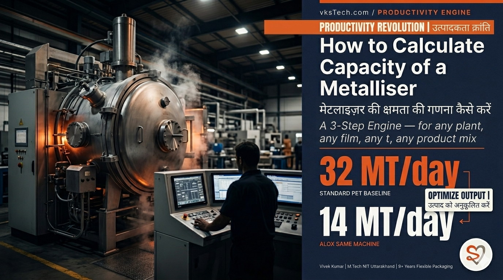
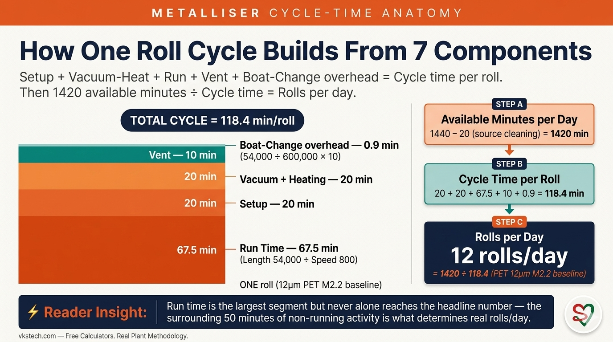
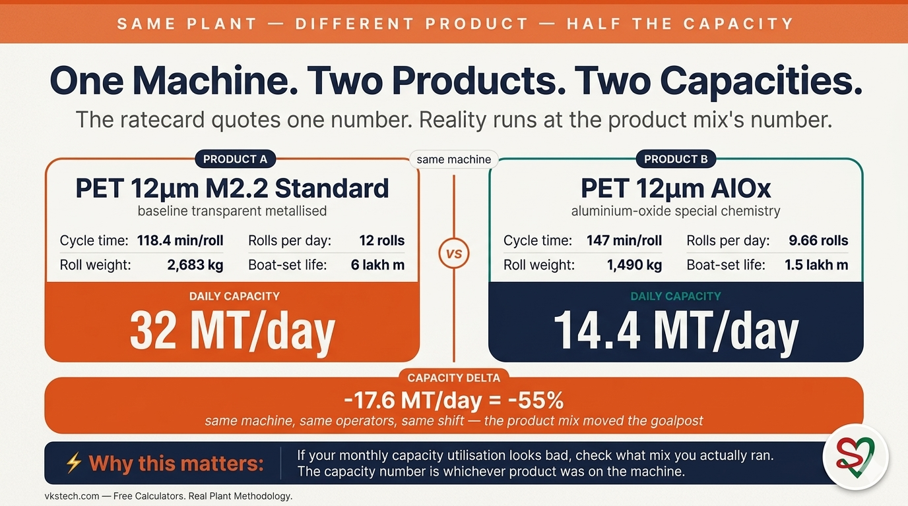
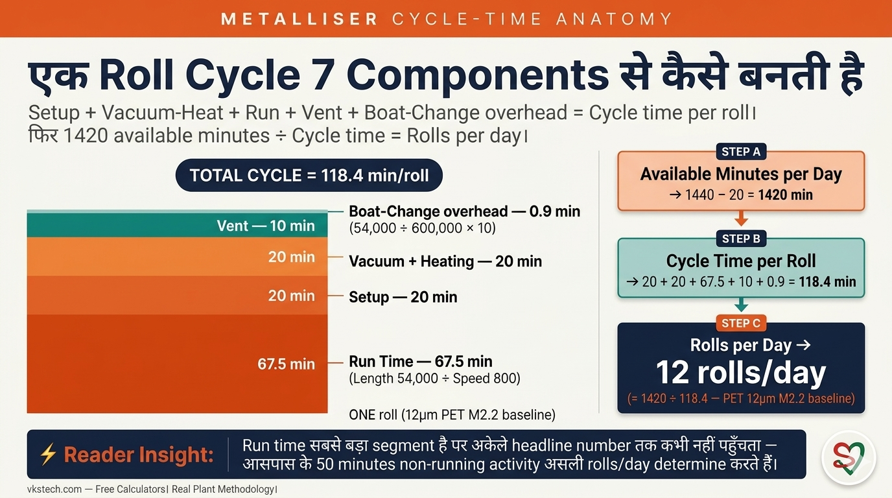
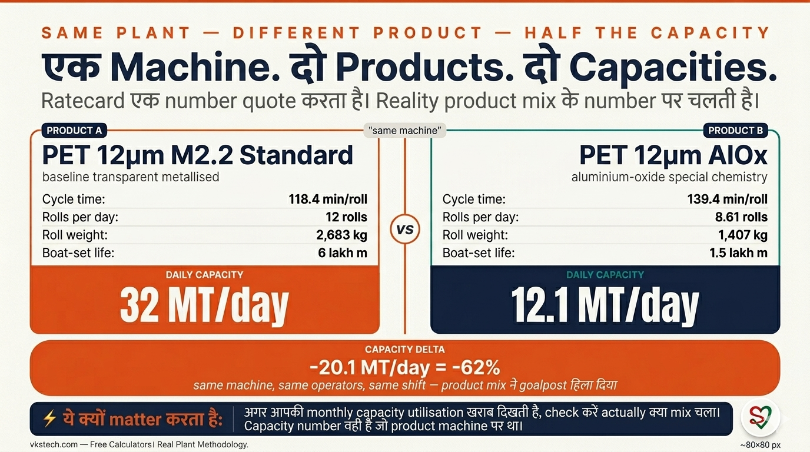

📖 11-min read | Real Plant Methodology | Published January 2025 | Bookmark for monthly capacity planning
Capacity is the most-asked, least-understood number on a metalliser. Every plant has a "rated capacity" on the ratecard — usually a single MT/day figure quoted to customers, planners, and the corporate office. But that single number hides a moving truth: real capacity changes with product mix. Run a day of standard 12 micron PET and you get one capacity. Run a day of AlOx the next, and capacity drops by more than half. Same machine, same operators, same shift — different number.
This blog gives you a 3-step engine to calculate your plant's actual capacity for any product mix. Eleven minutes. After this, when corporate asks "what's our metalliser capacity?", you'll have a defensible answer for any specific mix — not a single ratecard number that's right for nothing in particular.
Baselines: PET 12μm M2.2 / 3000mm / 54,000m • BOPP 18μm M2.2 / 3000mm / 36,000m • CPP 22μm M2.2 / 3000mm / 24,000m

The metalliser's productivity for any specific material is fully determined by seven cycle-time inputs plus one daily overhead. Get these seven numbers from your plant's logs and you can compute rolls per day for any material.
| Input | Typical range | What it captures |
|---|---|---|
| 1. Setup time per roll | 15-30 min | Loading new core, threading, web alignment, parameter set-up |
| 2. Vacuum + Heating time | 15-25 min | Chamber pump-down + source-bar conditioning before deposition starts |
| 3. Average line speed | 400-900 m/min | Steady-state metallisation speed for that material |
| 4. Average jumbo length | varies by film | The metallised film output per cycle (54,000m for 12μm PET baseline) |
| 5. Vent time | 5-15 min | Chamber depressurisation between cycles |
| 6. Boat change time | 5-15 min | Time to replace evaporation boats when boat-set life is reached |
| 7. Length per boat-set | varies by OD | How much metallised film one boat-set produces before replacement |
And one daily overhead: Planned source cleaning — typically ~20 minutes per 24 hours, scheduled once per day for cleaning the source bar to maintain deposition quality.
Available minutes per day = 1440 − Source Cleaning (20 min) = 1420 min
Cycle time per roll = Setup + Vacuum-Heat + (Length ÷ Speed) + Vent + (Length ÷ Boat-set life) × Boat-change time
Rolls per day = 1420 ÷ Cycle time per roll
Boat changes within a single jumbo: Most baseline materials (12μm PET at M2.2 with 5-6 lakh m boat-set life and 54,000m jumbos) have zero mid-cycle boat changes — one boat-set lasts 8-10 jumbos. The boat-change term in the formula naturally handles this: when length-per-boat-set is much greater than jumbo length, the term contributes near-zero. For shorter boat-set materials (high OD, AlOx), the term kicks in significantly.
Boat-set life shortens as OD increases — thicker deposition wears the boats faster. Use this as a starting reference, but always measure your own plant's actual life:
| OD value / Material | Typical boat-set life | Notes |
|---|---|---|
| OD M2.2 (Standard transparent) | 5-6 lakh m | Baseline. Boat-set covers 8-10 baseline jumbos. |
| OD M2.5 | 4-5 lakh m | Higher OD = thicker deposition = shorter life |
| OD M2.8 | 3-4 lakh m | Heavy deposition. Boat-set covers ~6 jumbos. |
| AlOx (Aluminium Oxide) | 1-2 lakh m | Critical material. Boat-set covers 3-4 jumbos. Mid-cycle changes common. |
Plug your plant's numbers into the formula. Here's the validated baseline for a typical Indian flexible-packaging plant running standard 12 micron PET at M2.2:
Inputs:
Calculation:
Rolls per day = 1420 ÷ 118.4 = 12 rolls/day
This 12 rolls/day matches the baseline number used as input throughout Blog #29 for equivalence factor derivation. The two blogs lock together: Blog 30 computes rolls/day; Blog 29 uses it to derive factors.
Once rolls per day is known, the second step is to compute the average weight of each roll. The standard film-roll weight formula:
Roll weight (kg) = Width(mm) × Length(m) × Micron × Density × 0.000001
Density values for common metalliser films (matches the convention used across vksTech.com calculators including Blog #27):
| Film | Density (g/cc) |
|---|---|
| PET | 1.38 |
| BOPP | 0.91 |
| CPP | 0.90 |
Width assumption: "Width" in this formula is the jumbo width metallised on the machine — typically 3000mm for a standard metalliser. The sum of all slit widths for the day equals this jumbo width. So for daily capacity, use jumbo width directly (3000mm), not individual slit widths.
Worked example continued (12μm PET baseline):
Capacity (MT/day) = Rolls per day × Roll weight (kg) ÷ 1000
For PET 12μm M2.2 baseline:
Capacity = 12 rolls/day × 2,683 kg/roll ÷ 1000 = ~32 MT/day
Most plants quote a single ratecard capacity number around this figure — and for the baseline product, this is correct. The trouble starts when product mix shifts. Watch what happens with the same plant on a different product.

Now compute capacity for the same plant running 12μm PET AlOx — special chemistry, narrower jumbo, much heavier boat-change overhead, and a daily source-cleaning load that eats four hours of the day:
Inputs (AlOx — real plant data):
Step 1 — Rolls/day:
Step 2 — Roll weight:
Step 3 — Capacity = 8.61 × 1,407 ÷ 1000 = ~12.1 MT/day
Same machine, same crew, same shift. Standard 12μm PET = 32 MT/day. AlOx 12μm PET = 12.1 MT/day. Capacity drops by 62% on the same physical line — more than half the throughput gone. Three things destroy AlOx capacity simultaneously: boat-change time jumps from 10 min to 60 min (6× longer because oxide chemistry erodes boats aggressively), source cleaning balloons from 20 min/day to 240 min/day (4 hours, gone), and jumbo width drops from 3000mm to 2360mm. The single ratecard number is right for nothing — it's an average that fits no specific day's mix. If your monthly capacity utilisation looks bad, check what mix you actually ran. The capacity goal-post moved.
Three steps. Enter your plant's numbers in Step 1 and Step 2 below. Calculator outputs rolls/day, roll weight, and daily capacity in MT.
Mistake 1 — Using OEM rated speed instead of measured average speed. The machine vendor's datasheet says the line can run at 950 m/min for 12μm M2.2. Your plant's measured sustainable rate is 800 m/min. If you use 950 in the formula, you'll compute ~14 rolls/day instead of the real ~12 — overstating capacity by ~17%. Fix: always pull line speed from your plant's logs, averaged over a representative month. The datasheet is a peak number; you need the operating average.
Mistake 2 — Forgetting vent time. Operators sometimes time setup-to-setup but exclude vent because it happens "between" cycles. The formula needs all non-running time accounted for. Skipping a 10-minute vent in a 118-minute cycle inflates rolls/day by ~9%. Fix: include every minute the chamber is not actively depositing — setup, vacuum-heat, vent, boat changes, source cleaning. The 24-hour day must absorb all of them.
Mistake 3 — Ignoring mid-cycle boat changes for short boat-set materials. For baseline 12μm M2.2 with 6 lakh m boat life and 54,000m jumbos, mid-cycle boat changes are negligible (one per ~10 jumbos). But for AlOx with 1.5 lakh m boat life and 36,000m jumbos plus 60-min boat-change time, you get ~0.24 boat changes per jumbo and 14.4 minutes of boat overhead per roll — almost as much as the entire setup or vent stage. Plants that built their capacity model around the baseline often forget to include the boat-change term, then wonder why AlOx capacity numbers don't match the floor reality. Fix: always include the boat-change term, even if it's near-zero for your baseline. The formula is general; the term self-corrects to near-zero when boat-set life is large.
Bonus mistake to watch: Using best-cycle data instead of monthly average. Best cycles bias rolls/day high, just like single best-day measurements bias equivalence factors high (see Blog #29). Use 90-day averages for capacity that survives review-meeting scrutiny.
One-week rollout to know your plant's real capacity for any product:
This blog is the productivity foundation that supports the rest of the series:
Stuck on how to measure any of the seven cycle inputs at your plant? Unsure how to extract average line speed from your shift logs? Want to discuss boat-set life for a specific OD? Drop your question in the Q&A section at the bottom of this page — Vivek answers personally.
📌 Series complete. Blogs 28, 29, and 30 form a tight triangle: 30 → 29 → 28. Blog 30 computes rolls/day from cycle inputs. Blog 29 turns rolls/day into equivalence factors. Blog 28 turns equivalence factors into Equivalent ₹/kg conversion cost. Together, they give you the full financial-controls toolkit for the metalliser — from shop-floor cycle data to monthly P&L.
📖 11-min read | Real Plant Methodology | January 2025 में published | Monthly capacity planning के लिए bookmark करें
Capacity Metalliser पर सबसे ज़्यादा पूछा जाने वाला, सबसे कम समझा जाने वाला number है। हर plant की एक "rated capacity" ratecard पर होती है — usually एक single MT/day figure जो customers, planners, और corporate office को quote होती है। पर वो single number एक moving truth छुपाता है: real capacity product mix के साथ बदलती है। एक दिन standard 12 micron PET चलाओ, एक capacity मिलती है। अगले दिन AlOx चलाओ, capacity आधी से कम हो जाती है। Same machine, same operators, same shift — different number।
ये blog आपको एक 3-step engine देता है किसी भी product mix के लिए आपके plant की actual capacity calculate करने का। ग्यारह minutes। इसके बाद जब corporate पूछे "हमारी metalliser capacity क्या है?", आपके पास किसी भी specific mix के लिए defensible answer होगा — एक ratecard number नहीं जो किसी particular चीज़ के लिए सही नहीं है।
Baselines: PET 12μm M2.2 / 3000mm / 54,000m • BOPP 18μm M2.2 / 3000mm / 36,000m • CPP 22μm M2.2 / 3000mm / 24,000m

किसी भी specific material के लिए metalliser की productivity पूरी तरह सात cycle-time inputs plus एक daily overhead से determined होती है। ये सात numbers अपने plant के logs से लें और किसी भी material के लिए rolls per day compute करें।
| Input | Typical range | क्या capture करता है |
|---|---|---|
| 1. Setup time per roll | 15-30 min | नया core load, threading, web alignment, parameter setup |
| 2. Vacuum + Heating time | 15-25 min | Chamber pump-down + source-bar conditioning deposition शुरू होने से पहले |
| 3. Average line speed | 400-900 m/min | उस material के लिए steady-state metallisation speed |
| 4. Average jumbo length | film के हिसाब से | हर cycle का metallised film output (12μm PET baseline के लिए 54,000m) |
| 5. Vent time | 5-15 min | Cycles के बीच chamber depressurisation |
| 6. Boat change time | 5-15 min | Boat-set life पूरी होने पर evaporation boats replace करने का time |
| 7. Length per boat-set | OD के हिसाब से | एक boat-set कितना metallised film produce करता है replacement से पहले |
और एक daily overhead: Planned source cleaning — typically ~20 minutes per 24 hours, source bar cleaning के लिए day में एक बार scheduled deposition quality maintain करने के लिए।
Available minutes per day = 1440 − Source Cleaning (20 min) = 1420 min
Cycle time per roll = Setup + Vacuum-Heat + (Length ÷ Speed) + Vent + (Length ÷ Boat-set life) × Boat-change time
Rolls per day = 1420 ÷ Cycle time per roll
Single jumbo के अंदर boat changes: ज़्यादातर baseline materials (12μm PET at M2.2 with 5-6 lakh m boat-set life और 54,000m जumbos) में zero mid-cycle boat changes होते हैं — एक boat-set 8-10 जumbos चलती है। Formula में boat-change term इसे naturally handle करता है: जब length-per-boat-set जumbo length से बहुत बड़ी हो, term near-zero contribute करता है। Shorter boat-set materials (high OD, AlOx) के लिए term significantly kick-in करता है।
OD बढ़ने के साथ boat-set life कम होती है — thicker deposition boats को तेज़ी से wear करती है। इसे starting reference के रूप में use करें, पर हमेशा अपने plant की actual life measure करें:
| OD value / Material | Typical boat-set life | Notes |
|---|---|---|
| OD M2.2 (Standard transparent) | 5-6 lakh m | Baseline। Boat-set 8-10 baseline जumbos cover करती है। |
| OD M2.5 | 4-5 lakh m | Higher OD = thicker deposition = shorter life |
| OD M2.8 | 3-4 lakh m | Heavy deposition। Boat-set ~6 जumbos cover करती है। |
| AlOx (Aluminium Oxide) | 1-2 lakh m | Critical material। Boat-set 3-4 जumbos cover करती है। Mid-cycle changes common हैं। |
अपने plant के numbers formula में plug करें। Standard 12 micron PET at M2.2 चलाने वाले typical Indian flexible-packaging plant का validated baseline:
Inputs:
Calculation:
Rolls per day = 1420 ÷ 118.4 = 12 rolls/day
ये 12 rolls/day वही baseline number है जो Blog #29 में equivalence factor derivation के लिए input के रूप में throughout use हुआ। दोनों blogs lock together: Blog 30 rolls/day compute करती है; Blog 29 इसे factors derive करने के लिए use करती है।
Rolls per day पता चलने के बाद, second step है हर roll का average weight compute करना। Standard film-roll weight formula:
Roll weight (kg) = Width(mm) × Length(m) × Micron × Density × 0.000001
Common metalliser films के लिए density values (vksTech.com calculators across Blog #27 सहित use होने वाले convention के साथ match करते हैं):
| Film | Density (g/cc) |
|---|---|
| PET | 1.38 |
| BOPP | 0.91 |
| CPP | 0.90 |
Width assumption: इस formula में "Width" वो जumbo width है जो machine पर metallised हो रही है — typically standard metalliser के लिए 3000mm। दिन के सारे slit widths का sum इस जumbo width के बराबर होता है। तो daily capacity के लिए जumbo width directly use करें (3000mm), individual slit widths नहीं।
Worked example continued (12μm PET baseline):
Capacity (MT/day) = Rolls per day × Roll weight (kg) ÷ 1000
PET 12μm M2.2 baseline के लिए:
Capacity = 12 rolls/day × 2,683 kg/roll ÷ 1000 = ~32 MT/day
ज़्यादातर plants इस figure के around एक single ratecard capacity number quote करते हैं — और baseline product के लिए, ये correct है। Trouble तब शुरू होती है जब product mix shift होती है। देखिए same plant पर different product के साथ क्या होता है।

अब same plant के लिए 12μm PET AlOx चलाते हुए capacity compute करें — special chemistry, narrower जumbo, बहुत भारी boat-change overhead, और daily source-cleaning load जो दिन के 4 घंटे खा जाती है:
Inputs (AlOx — real plant data):
Step 1 — Rolls/day:
Step 2 — Roll weight:
Step 3 — Capacity = 8.61 × 1,407 ÷ 1000 = ~12.1 MT/day
Same machine, same crew, same shift। Standard 12μm PET = 32 MT/day। AlOx 12μm PET = 12.1 MT/day। Same physical line पर capacity 62% गिर जाती है — आधे से ज़्यादा throughput गायब। तीन चीज़ें एक साथ AlOx capacity destroy करती हैं: boat-change time 10 min से 60 min हो जाता है (6× longer क्योंकि oxide chemistry boats को aggressively erode करती है), source cleaning 20 min/day से 240 min/day बढ़ जाती है (4 घंटे, गायब), और jumbo width 3000mm से 2360mm गिर जाती है। Single ratecard number किसी भी चीज़ के लिए सही नहीं है। अगर आपकी monthly capacity utilisation खराब दिखती है, check करें actually क्या mix चला। Capacity goal-post move हुआ।
तीन steps। Step 1 और Step 2 में अपने plant के numbers डालें। Calculator rolls/day, roll weight, और daily capacity in MT output करता है।
Mistake 1 — Measured average speed की जगह OEM rated speed use करना। Machine vendor की datasheet कहती है कि line 12μm M2.2 के लिए 950 m/min पर run कर सकती है। आपके plant की measured sustainable rate 800 m/min है। अगर formula में 950 use करते हैं, ~14 rolls/day compute होगा real ~12 की जगह — capacity ~17% overstate होगी। Fix: हमेशा अपने plant के logs से representative month average line speed pull करें। Datasheet peak number है; आपको operating average चाहिए।
Mistake 2 — Vent time भूलना। Operators sometimes setup-to-setup time करते हैं पर vent exclude कर देते हैं क्योंकि वो cycles के "between" होती है। Formula को सब non-running time account करना है। 118-minute cycle में 10-minute vent skip करने से rolls/day ~9% inflate होती है। Fix: हर वो minute include करें जब chamber actively deposit नहीं कर रहा — setup, vacuum-heat, vent, boat changes, source cleaning। 24-hour day को सबको absorb करना है।
Mistake 3 — Short boat-set materials के लिए mid-cycle boat changes ignore करना। Baseline 12μm M2.2 के लिए 6 lakh m boat life और 54,000m जumbos के साथ, mid-cycle boat changes negligible हैं (हर ~10 जumbos में एक)। पर AlOx के लिए 1.5 lakh m boat life, 36,000m जumbos और 60-min boat-change time के साथ, ~0.24 boat changes per जumbo और 14.4 minutes का boat overhead per roll मिलता है — almost पूरे setup या vent stage जितना। Plants जो अपना capacity model baseline के around बनाते हैं, वो अक्सर boat-change term include करना भूल जाते हैं, फिर हैरान होते हैं कि AlOx capacity numbers floor reality से match क्यों नहीं करते। Fix: हमेशा boat-change term include करें, चाहे आपके baseline के लिए near-zero क्यों न हो। Formula general है; जब boat-set life बड़ी होती है, term self-correct होकर near-zero हो जाता है।
Bonus mistake to watch: Monthly average की जगह best-cycle data use करना। Best cycles rolls/day high bias करते हैं, just like single best-day measurements equivalence factors high bias करते हैं (देखें Blog #29)। Review-meeting scrutiny survive करने वाली capacity के लिए 90-day averages use करें।
किसी भी product के लिए अपने plant की real capacity जानने के लिए one-week rollout:
ये blog productivity foundation है जो series के बाक़ी हिस्से को support करती है:
सात cycle inputs में से किसी को अपने plant पर measure करने में अटक गए? Shift logs से average line speed कैसे extract करें — confused? किसी specific OD के लिए boat-set life पर discuss करना है? अपना सवाल इस page के bottom पर Q&A section में डालें — Vivek personally answer करते हैं।
📌 Series complete. Blogs 28, 29, और 30 एक tight triangle बनाते हैं: 30 → 29 → 28। Blog 30 cycle inputs से rolls/day compute करती है। Blog 29 rolls/day को equivalence factors में convert करती है। Blog 28 equivalence factors को Equivalent ₹/kg conversion cost में convert करती है। मिलकर, ये metalliser के लिए complete financial-controls toolkit देते हैं — shop-floor cycle data से monthly P&L तक।